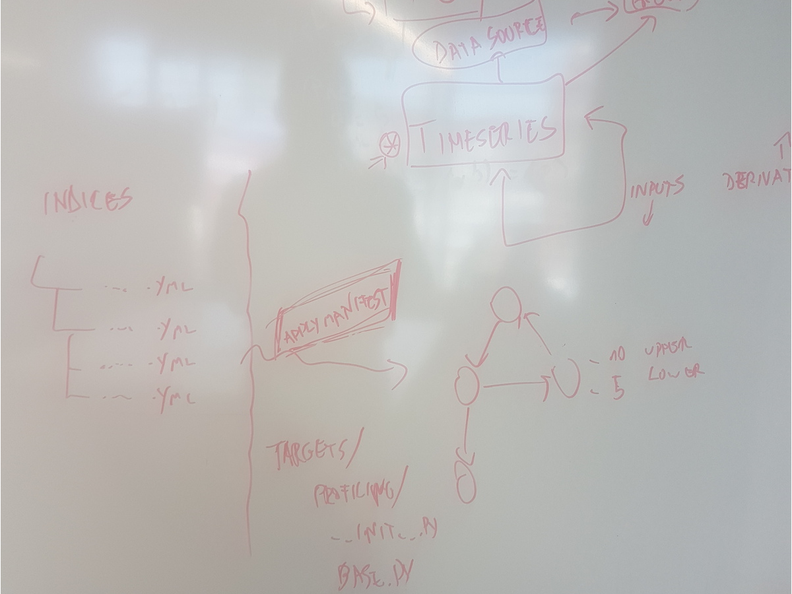

How to start Enrichment in Tranque¶
This page describes the way to start the enrichment for Tranque
This script applies the index represented by the given manifest to the given target. Options are: target (The target’s canonical name. For example: illapel) and the manifest (The index manifest. For example: ecourse).
./manage.py applytargetmanifest illapel ecourse
ecourse/build/ecourse.manifest
{
"name": "ecourse",
"version": "ecourse:local",
"groups": [
{
"name": "Curso Estudiante",
"canonical_name": "curso_estudiante"
}
],
"metagroups": [
{
"canonical_name__startswith": "curso-"
},
{
"canonical_name__startswith": "estudiante-"
}
],
"inputs": [
"ecourse-mvp.escuela.curso.nota"
],
"entrypoints": [
"ecourse-mvp.escuela"
]
}